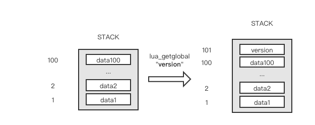
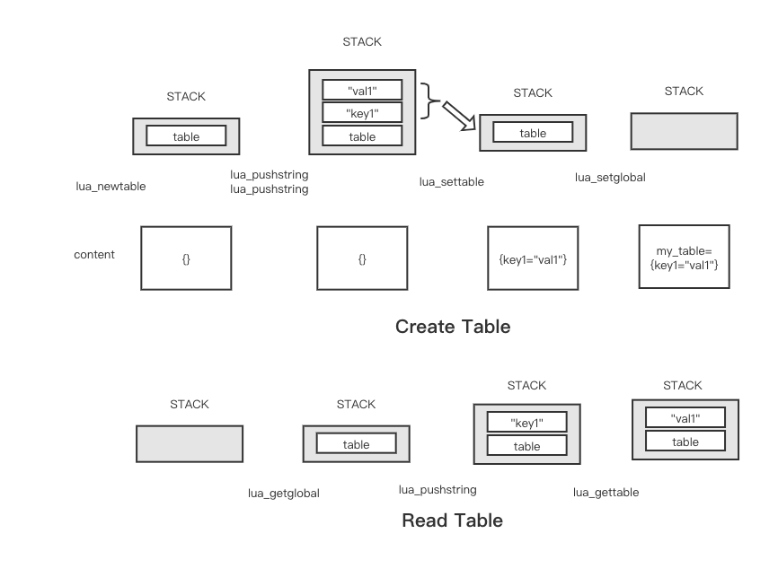
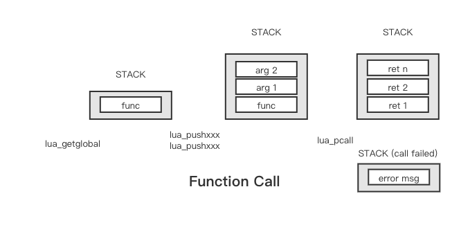

一、前言
Lua是一种使用十分方便的脚本语言，同时又能C/C++无缝的粘合在一起，在速度上也比很多其他的脚本语言快了一个数量级，在使用LuaJit的情况下，速度甚至可以与C语言比肩。同时Lua支持模块的热更新，在游戏等行业受到广泛的应用。
同时Lua虚拟机十分的轻量，在占用极少内存和依赖的情况下，可以方便的嵌入到我们的项目中。
本文中，主要介绍了在C/C++项目中，使用Lua虚拟机的技巧，着重介绍Lua_State的原理和使用。简单的说就是用C去调用Lua。另一个技术是用Lua调用C库，可以为Lua程序加速，这个在以后的文章中再介绍。
本文中使用的LuaJit作为我们Lua脚本的执行引擎。对应的Lua的版本是Lua5.1。
二、C调用Lua的案例
在下面的程序中，我们的Lua脚本中，使用一个全局变量version表示程序的版本，定义一个add函数，负责计算两个数组的和。之后通过在C程序中加载Lua虚拟机，打印版本号和调用add函数。
下面是对应的C++程序：
#include <iostream>
extern "C" {
#include <lualib.h>
#include <lauxlib.h>
}
const char *lua_script = R"(
version = '1.0.0'
function add(a, b)
return a + b;
end
)";
int main() {
lua_State *L = luaL_newstate();
if (L == NULL) {
std::cerr << "create state failed!" << std::endl;
exit(-1);
}
if (luaL_dostring(L, lua_script) != 0) {
std::cerr << "cannot run lua script!" << std::endl;
exit(-1);
}
// get global variable
lua_getglobal(L, "version");
const char *version = lua_tostring(L, -1);
std::cout << "version: " << version << std::endl;
lua_pop(L, 1);
// call global function
lua_getglobal(L, "add");
int a = 100;
int b = 200;
lua_pushnumber(L, a);
lua_pushnumber(L, b);
if (lua_pcall(L, 2, 1, 0) != 0) {
std::cerr << "call func failed, got error: " << lua_tostring(L, -1) << std::endl;
lua_pop(L, 1);
exit(-1);
}
int sum = lua_tonumber(L, -1);
lua_pop(L, 1);
std::cout << a << " + " << b << " = " << sum << std::endl;
lua_close(L);
return 0;
}编译和运行，我这里用的luajit，所以链接的库可能略有不同，使用lua的话，使用-llua：
# compile
g++ lua_sample.cpp -o lua_sample -I /path/to/lua/include/ -L /path/to/lua/lib -lluajit-5.1 -std=c++11 -o lua_sample
# run
LD_LIBRARY_PATH=/path/to/lua/lib ./lua_sample就可以得到如下的输出：
version: 1.0.0
100 + 200 = 300三、交互与栈
C与Lua的交互，是通过lua_State和相关的函数接口来实现的（lua_getglobal, lua_pushnumber等）。但是具体的值的获取和函数调用，其实是利用了一套栈机制。
C与Lua的交互，本质上是对Lua栈做相关的操作。lua_pushxxx是将数据压入栈中，而lua_pop就是出栈操作。lua_toxxx是将栈中对应位置的数据转换成我们期望的数据类型，而输出。
下面我们按情况分别介绍。
四、全局变量
1. 全局的基本类型数据
获取和设置全局变量，是一个重要的功能。
例子中的是获取全局变量的实例。我们现在知道所谓的交互都是堆栈做操作。lua_getglobal的作用就是把输入的变量名对应的数据放入栈顶。

之后，我们只需要根据栈中的位置，获取对应的数据即可。比如上图中，version就在栈顶的位置，索引号为101。由于我们一般都是对栈顶做操作，使用负数的索引会更方便。lua_tostring(L, -1)就可以把索引号为-1的数据（即栈顶的数据）转换成string类型输出。
在数据使用结束后，我们需要将数据pop出栈（lua_pop(L, 1)出栈一个数据），不然这个栈的大小会越来越大，导致最终程序内存很大，但是又不是因为内存泄漏，难以用valgrind等程序查到问题。
那么如何设置一个全局变量呢？
lua_pushstring(L, "hello world");
lua_setglobal(L, "greet");通过lua_pushxxx，在栈中push一个数据，之后使用lua_setglobal即可。lua_setglobal的功能是，pop出栈顶的数据，并使用给定的名字把它设置为全局变量。这样，我们在lua虚拟机就新建了名字为greet，值为字符串"hello world"的全局变量了。由于该操作本身就会pop出栈顶数据，我们随后就不需要再自行pop了。
2. 全局Table
Table的创建和读取，比一般变量要稍微复杂一点。主要使用lua_newtable或lua_createtable创建Table。之后使用lua_settable设置Table的键值对，lua_gettable去读取对应的值。
下面是一个完整的Demo。
#include <iostream>
extern "C" {
#include <lualib.h>
#include <lauxlib.h>
}
int main()
{
lua_State *L = luaL_newstate();
// 创建table
lua_newtable(L); // t = {} 创建没有名字的table，这里用t代替
// 也可以使用lua_createtable创建，该函数可以指定预分配的大小
lua_pushstring(L, "key1");
lua_pushstring(L, "val1");
lua_settable(L, -3); // t["key1"] = "val1"
lua_pushinteger(L, 1);
lua_pushstring(L, "val2");
lua_settable(L, -3); // t[1] = "val2"
// setfield 可以稍微简化创建的操作，但是key只能是字符串
lua_pushstring(L, "val3");
lua_setfield(L, -2, "key3"); // t["key3"] = "val3"
lua_setglobal(L, "my_table"); // 给这个匿名的table一个名字
// 读取table
lua_getglobal(L, "my_table");
lua_pushstring(L, "key1");
lua_gettable(L, -2);
std::cout << "v1: " << lua_tostring(L, -1) << std::endl;
lua_pop(L, 1);
lua_pushinteger(L, 1);
lua_gettable(L, -2);
std::cout << "v2: " << lua_tostring(L, -1) << std::endl;
lua_pop(L, 1);
// getfield可以简化
lua_getfield(L, -1, "key3");
std::cout << "v3: " << lua_tostring(L, -1) << std::endl;
lua_pop(L, 1);
lua_pop(L, 1); // pop table
lua_close(L);
return 0;
}为了方便理解，这里我绘制了一个栈空间的示意图：

首先是table的创建，使用lua_newtable可以创建一个table对象，并且在栈顶。之后我们将键、值分别push进栈，使用lua_settable，就可以将键值出栈，并设置进table中。这个过程也可以使用lua_setfield函数进行简化，在demo里面有写。最后我们使用lua_setglobal给栈顶的数据设置一个名字，并且出栈。这样，就创建好了一个Table。
读取的操作也类似。首先，我们使用lua_getglobal将对应的table放入栈顶。之后push想要获取的key值，最后使用lua_gettable，该函数在pop出key值后，会获取key值对应的value，并放入栈顶。这样就可以完成table的读取了。lua_gettable可以通过lua_getfield来简化操作。demo中也给出了例子。
五、函数调用
在前面，我们知道了变量的读取和设置。本节将介绍函数的调用。我们知道对于一个函数而言，最重要的有三个部分：
- 函数入口
- 参数
- 返回值
这是第一个例子的节选。
lua_getglobal(L, "add");
int a = 100;
int b = 200;
lua_pushnumber(L, a);
lua_pushnumber(L, b);
if (lua_pcall(L, 2, 1, 0) != 0) {
std::cerr << "call func failed, got error: " << lua_tostring(L, -1) << std::endl;
lua_pop(L, 1);
exit(-1);
}
int sum = lua_tonumber(L, -1);
lua_pop(L, 1);调用示意图：

首选，我们使用lua_getglobal将函数入口入栈。之后使用lua_pushxxx向栈中push入参数。之后我们调用该函数，可以使用的函数有lua_call和lua_pcall。
lua_pcall表示protected mode。简单理解，lua_call没有返回值，我们不能知道函数调用的状态。而lua_pcall有返回值，并且支持设定错误处理函数。速度上lua_call更快一点。我这边只使用了lua_pcall最简单的用法，简单的检查一下返回值。
在函数调用完成后，函数入口和参数都均会出栈，如果调用没出现问题的话，返回值会被依次入栈。当一个函数有多个返回值，它的第一个返回值会首先入栈，因此栈顶是最终的返回值。如果调用出错的话，错误信息会放在栈顶。
void lua_call (lua_State *L, int nargs, int nresults);
int lua_pcall (lua_State *L, int nargs, int nresults, int errfunc);nargs表示函数的参数数目，nresults表示返回值的数目。errfunc是异常处理函数在栈中的位置，如果填写0的话，出错时，lua_pcall会把错误信息直接放在栈顶。lua_pcall的返回值表示是否出错，返回0则表示一切运行正常。
我们例子中的lua_pcall(L, 2, 1, 0)的意思就很明确了：帮忙调用一个函数，它的输入参数有2个，返回值有1个，如果程序出错的话，麻烦把错误信息放栈顶，谢谢。
函数返回值，我们通过lua_toxxx(L, index)来进行获取。该函数会把栈中对应index的值，转换成xxx的类型返回。这里的内存是由lua维护，我们在C中一般不需要释放的。
那么Lua支持哪些类型的数据呢？
建议使用这个参考文档：https://pgl.yoyo.org/luai/i/_
入栈lua_pushxxx:
- lua_pushboolean
- lua_pushcclosure
- lua_pushcfunction
- lua_pushfstring
- lua_pushinteger
- lua_pushlightuserdata
- lua_pushliteral
- lua_pushlstring
- lua_pushnil
- lua_pushnumber
- lua_pushstring
- lua_pushthread
- lua_pushvalue
- lua_pushvfstring
取值lua_toxxx:
- lua_toboolean
- lua_tocfunction
- lua_tointeger
- lua_tolstring
- lua_tonumber
- lua_topointer
- lua_tostring
- lua_tothread
- lua_touserdat
这里我碰到了需要传递指针的情况，这里就使用lightuserdata类型。我们可以把它看成void *。
对于更复杂的自定义数据类型，需要使用lua_newuserdata来创建。不过C和Lua交互，能用指针还是用指针吧，这样会方便很多，也符合C程序的特点。
六、Package Loader
对于一段Lua的程序字符串，我们怎么把它加载进Lua虚拟机并且编译成可以操作的变量和函数呢？Lua提供了若干个函数，可以将数据装载进Lua。
int luaL_loadbuffer (lua_State *L,
const char *buff,
size_t sz,
const char *name);
int luaL_loadfile (lua_State *L, const char *filename);
int luaL_loadstring (lua_State *L, const char *s);这几个函数的功能都是把数据加载进Lua虚拟机，luaL_loadbuffer是加载一段数据，并且给个命名，用于debug等用处。luaL_loadfile是从文件中读取。luaL_loadstring是读取字符串。返回值不为0的话，表示加载出错。这三个函数最终都是调用了lua_load进行代码编译，并将编译后的代码放与栈顶。
上述的函数只是完成程序文本的加载，编译，只有在执行之后才能变成虚拟机中的变量和函数。由于代码已经在栈顶了，我们也没有需要传入的参数。因此只需要随后调用lua_pcall(L, 0, LUA_MULTRET, 0)即可。这里的LUA_MULTRET表示多个返回值。Lua会帮我们自动处理这些返回值。
因此，我们常见的加载Lua代码的逻辑是：
if (luaL_loadstring(L, str) || lua_pcall(L, 0, LUA_MULTRET, 0)) {
// load fail or pcall fail
}Lua中提供了一套简单的函数，和前面的写法等价：
int luaL_dofile (lua_State *L, const char *filename);
int luaL_dostring (lua_State *L, const char *str);所以在最开始的例子中，使用了luaL_dostring这个函数。
在Lua程序中，我们使用require关键字去加载模块，在写入local my_module = require("my_module")之后，Lua会从package.path和package.cpath依次去查找。
但是存在这么一种情况。我们的产品中，有许多的Lua模块，这些模块一起被打包和加密，只能通过特定接口去获取对应的数据，而且为了安全，数据必须在内存中，不能写入文件。这种情况下，Lua的默认行为就不能很好的加载我们的这些模块，这时候该怎么办？
这里就用到了Package Loader。Lua支持注册我们自己的包加载器。在Lua中，包的加载并不是严格的去根据文件名去查找，而是将包名传递给package loaders，让他们自行处理。Lua中可以有多种package loaders，在require时会依次调用package.loaders中的loader去加载，如果都没有加载成功，才会报错。
这样我们就可以注册一个自己的package loader，完成自定义的模块数据的加载。
int my_package_loader(lua_State *L)
{
const char *required_module_name = lua_tostring(L, -1);
std::string data = user_defined_load(required_module_name);
if (luaL_loadbuffer(L, data.c_str(), data.size(), required_module_name) != 0) {
std::cerr << "error load: " << lua_tostring(L, -1) << std::endl;
lua_pop(L, 1);
return 0;
}
return 1;
}
int main() {
lua_State *L = luaL_newstate();
luaL_openlibs(L); // 要装载系统库，比如math、table等。
lua_register(L, "my_loader", my_package_loader);
luaL_dostring(L, "table.insert(package.loaders, 2, my_loader)\n");
// do whatever you enjoy
lua_close(L);
}这里，我们在C/C++程序中，编写了package loader，lua中对loader的定义就是int xxx(lua_State *L)。之后我们使用lua_register，该函数可以将C函数注册为Lua的函数。之后，通过"table.insert(package.loaders, 2, my_loader)语句，将自定义的my_loader插入进package.loaders数组中。这样就完成的loader的注册了。由此，我们就可以封装数据读取的接口user_defined_load，从而完成内存中的Lua package的加载了。
七、沙盒环境
我们有很多时候，希望用户可以编写自己的插件，以增强软件的功能。比如VS Code就支持自己编写插件。但是这个插件，我们又需要较为严格的权限管理。比如，不能访问本地文件，删除文件等等。那么有什么比较合适的办法呢？
其实十分简单，Lua的全局函数都是存放在_G这个表里面的。由于虚拟机是由程序创建和提供的，我们只需要在虚拟机创建的时候，手动的禁用掉一些函数就可以了。
比如：
static const char *sandbox_env = "_G.os.execute = nil\n"
"_G.os.exit = nil\n"
"_G.os.remove = nil\n"
"_G.os.rename = nil\n"
"_G.io = nil\n"
"_G.debug = nil\n";
LuaL_dostring(L, sandbox_env);这样就可以禁用掉execute、exit等函数了。所以针对你期望的沙盒环境，可以选择性的开放相关的函数即可。
如果出现不存在_G或者require的错误，可能是没有启用Lua的对应的模块，使用void luaL_openlibs (lua_State *L);可以打开所有的标准库。
当然，我们还可以定制化的打开，参考 LUA标准库：
要使用这些（Lua所有的标准）库，
C的宿主程序需要先调用一下luaL_openlibs这个函数，这样就能打开所有的标准库。或者宿主程序也可以用luaL_requiref分别打开这些库：luaopen_base（基础库），luaopen_package（包管理库），luaopen_coroutine（协程库），luaopen_string（字符串库），luaopen_utf8（UTF8 库），luaopen_table（表处理库），luaopen_math（数学库），luaopen_io（I/O 库），luaopen_os（操作系统库），luaopen_debug（调试库）。这些函数都定义在lualib.h中。
八、结束语
至此，我们学习完了C调用Lua的相关知识，相信对于常见的功能需求都可以很好的满足了，针对个别的特殊的功能，还需要通过文档等进行学习。有时间，我会再整理一篇Lua调用C的文章。
转载请注明出处。